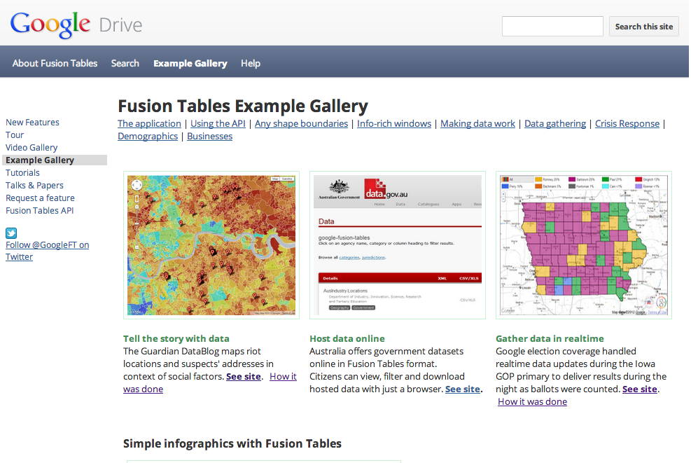
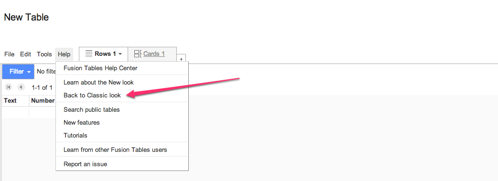
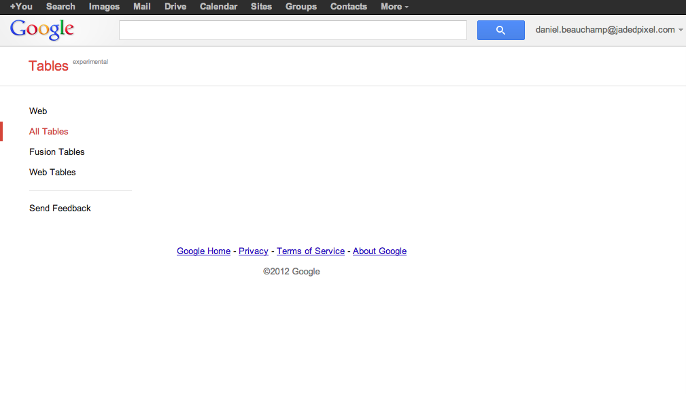

Slides
http://pushmatrix.github.com/fusiontable-slides
http://bit.ly/ULHyJx
What is Fusion Tables?

Quick note:
Make sure to switch into Fusion Table classic look. The tutorial was made with this UI in mind.

Extra challenge: Play with Other Datasets
